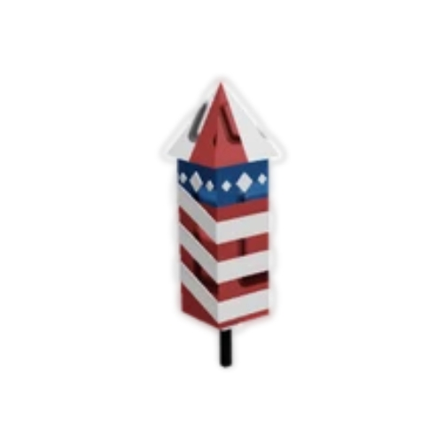

🎆 July 4th in Grow A Garden 🇺🇸
🔙 Back to DashboardIt’s time to party in the garden! Celebrate Independence Day Roblox-style with fireworks, festive flowers, and freedom-fueled fun!
🦅 Bald Eagle Pet
Show your spirit with this flying freedom friend. The Bald Eagle Pet wears a tiny Uncle Sam hat and flaps with pride—only available this event!
🎁 July 4th Crate
Packed with sparkles and style—open this crate to reveal surprise cosmetics, fireworks, and maybe even rare seeds! One-time only, grab yours before they're gone!
🌸 Firework Flower
Plant this seed and watch a spectacular firework bloom rise up from your soil—bursting with color and flair!
🌺 Liberty Lily

This star-spangled plant glows in red, white, and blue. It’s rare, radiant, and perfect for your patriotic patch!